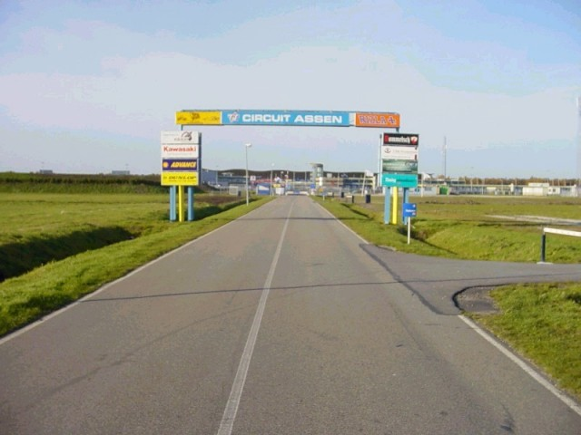
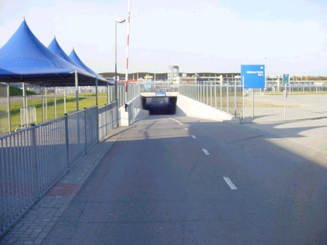
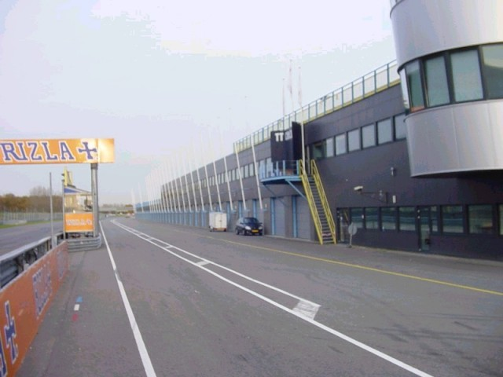
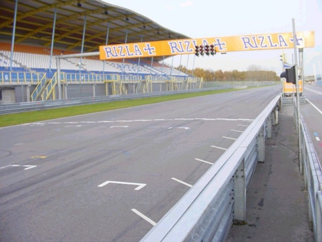
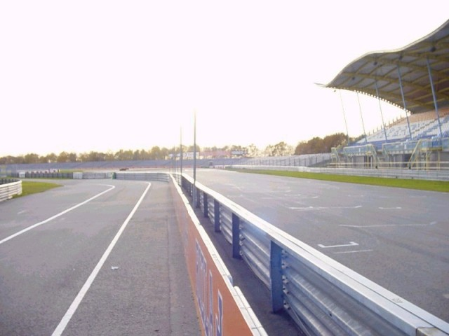
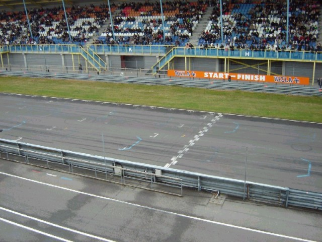
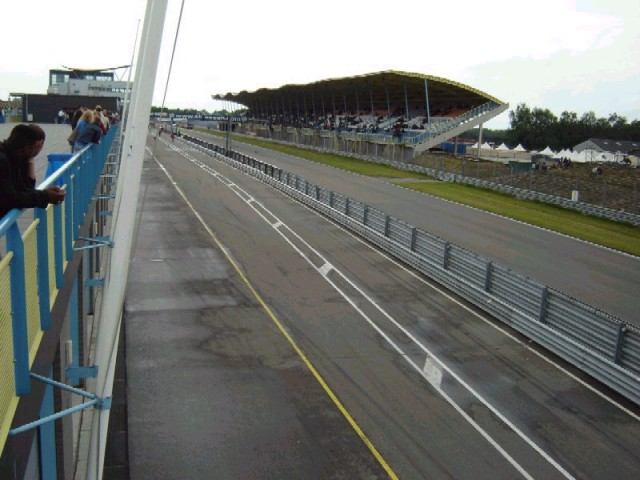
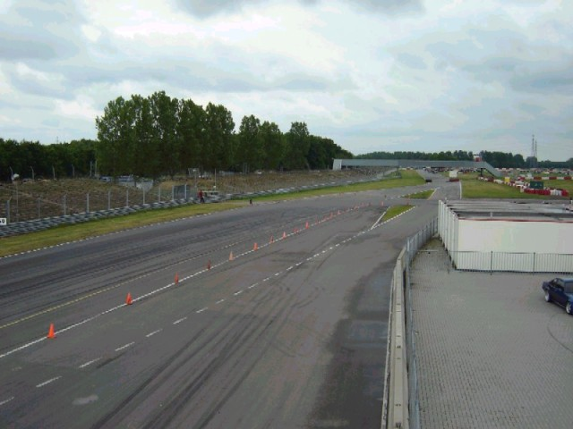

Numbers on the map represent the location where the photographs were taken. Click hyperlinks above to view the photographs.
Assen - Entrance & Pitlane [Page 1 of 5]
Contents || Entrance & Pitlane | Grandstand Views | Paddock Views | Pre-1984 (Part A) | Pre-1984 (Part B) || Home
Numbers on the map represent the location where the photographs were taken. Click
hyperlinks above to view the photographs.

01 - The main entrance of the circuit.

02 - This is the tunnel underneath the
Veenslang corner.

03 - The pits, looking towards start/finish.

04 - Start / finish.

05 - The pits, looking towards the Geert
Timmer corner.

06 - The Start/Finish line. Photo taken from
the pitboxes.

07 - Photo taken from above the last pitbox
in the pitlane, while looking back to start/finish.

08 - Photo taken from above the last pitbox
in the pitlane, while looking to the S-bocht and the Haarbocht.
Return to racingcircuits.net's Photo Archive Main Index
©2003, 2004 & 2005 Roelard Smit. Reproduced here with kind permission.